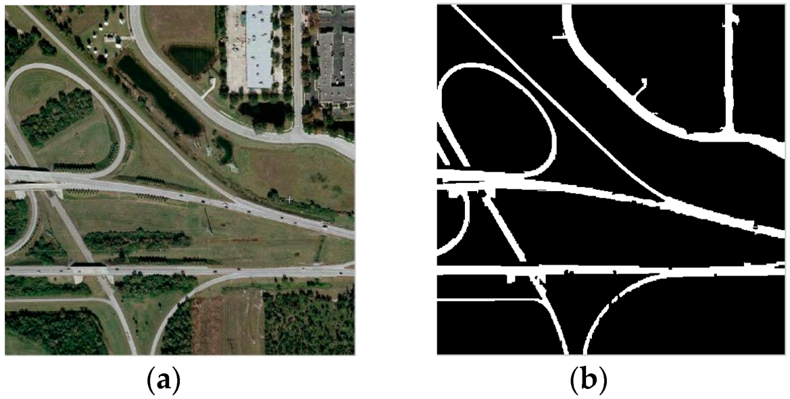
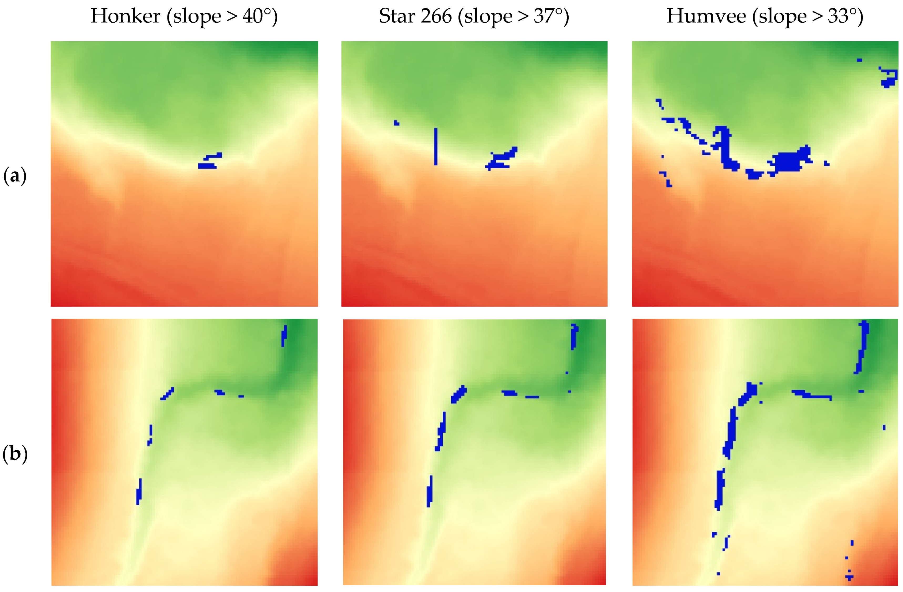
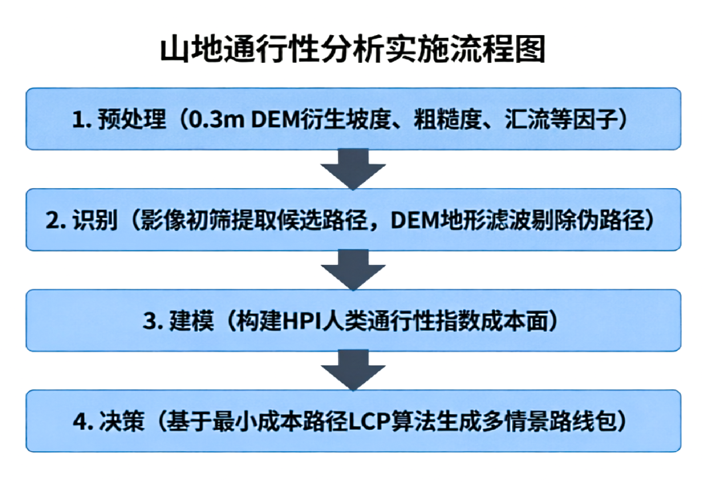
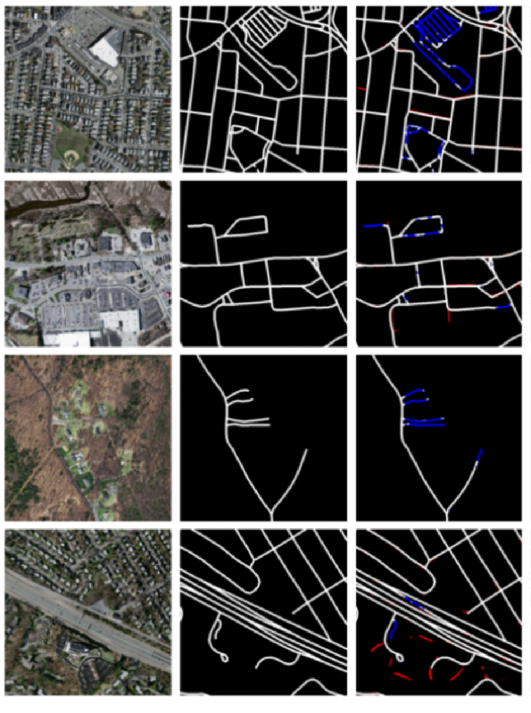
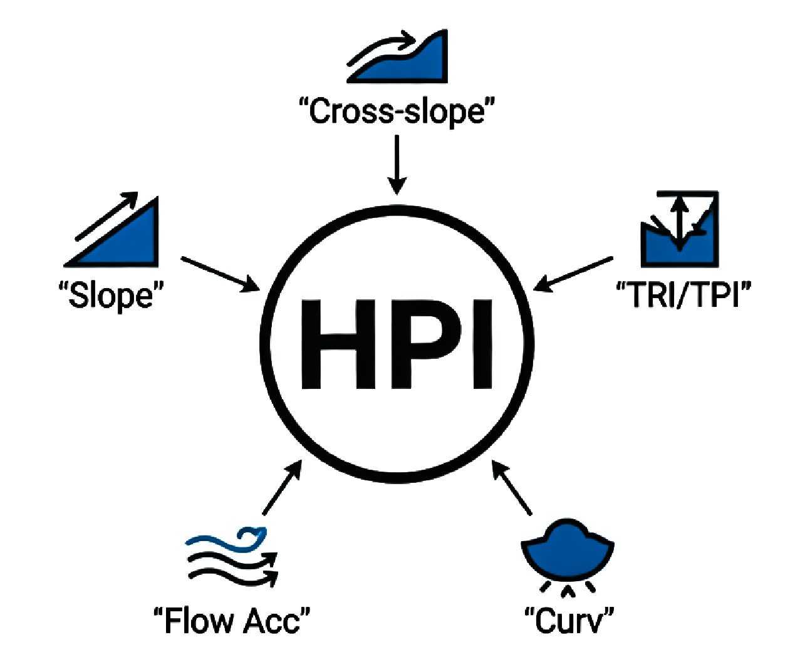
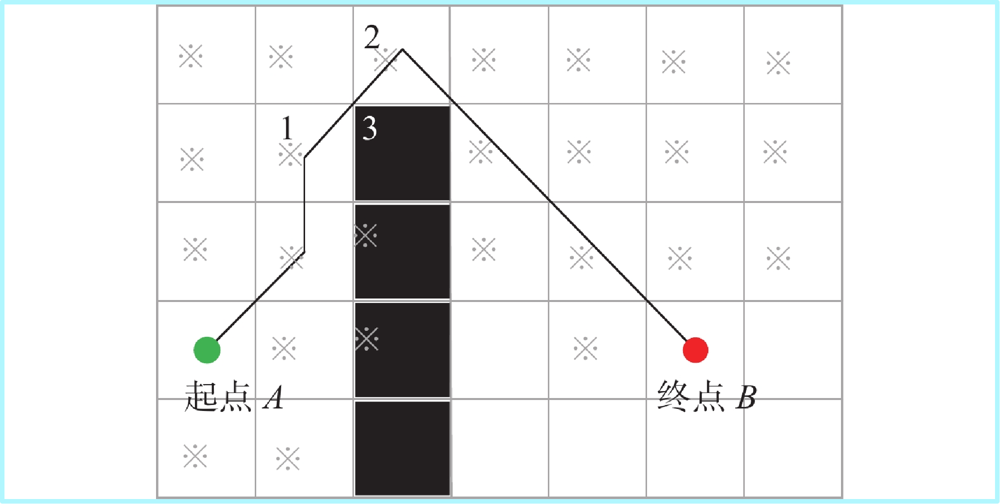
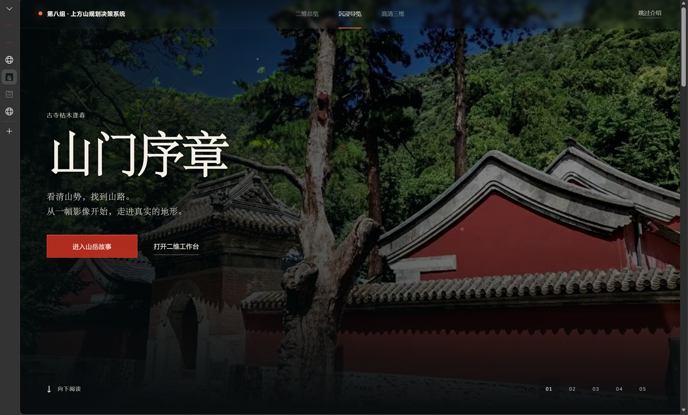
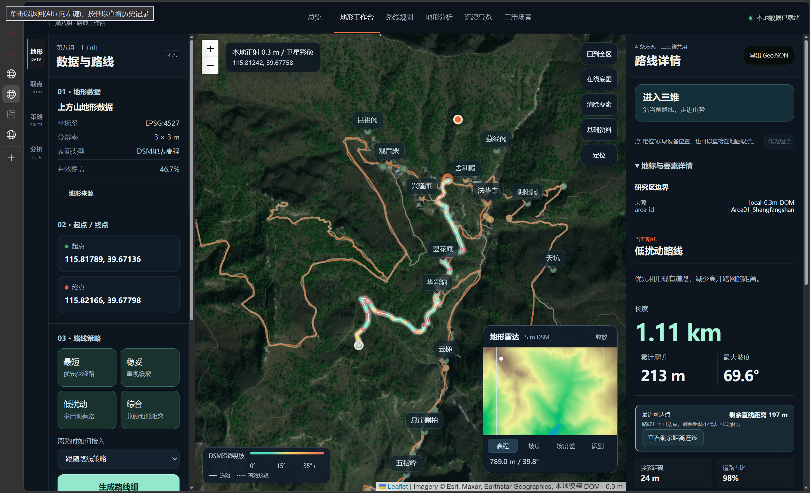
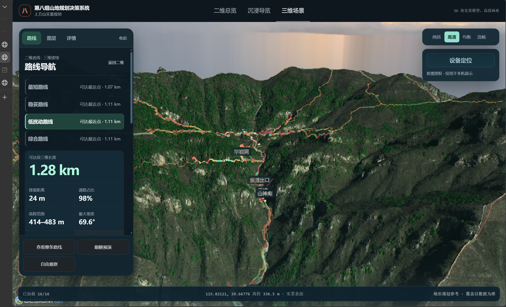

Shangfang Mountain Terrain Path Planning Decision-Making System

核心转向：激光雷达（LiDAR）可获取0.3 m级高精度DEM，精细刻画微地形，为通行分析提供可靠数据基础。
构建基于微地形分析的应急通行决策体系。
主干道受阻时，依据坡度与粗糙度优化路线，规避高风险地形，平衡效率与体能消耗。
雨雾或伤情下，动态加权LCP算法屏蔽冲沟、陡坡，输出“最安全”撤离通道。
担架转运时，评估路宽、横坡与转弯半径，筛选平缓稳固的可通行廊道。

理念：影像提供“线”线索，DEM提供“面”约束，多源融合。

算法依据：ArcGIS Pro / QGIS Cost‑Distance & LCP，将研究区视为连续阻力场，栅格单元赋予HPI成本，Dijkstra/A*求解最小累计成本路径。

图注：蓝色为遗漏小道，红色为虚警（不存在道路）。

HPI将野外“好不好走，危不危险”转化为栅格成本。
最小化距离成本，兼顾微地形阻力，晴好轻装。
坡度横坡高权重，规避滑坠，伤员撤离。
水文约束，汇流超阈值栅格设为屏障，阻断冲沟。
| 序号 | 点位ID | 经纬度 | 路面类型 | 风险等级 | 概况 |
|---|---|---|---|---|---|
| 01 | P‑001 | 115°E/39°N | 水泥硬化 | 1级 | 平整开阔，通行极佳 |
| 02 | P‑002 | 115°E/39°N | 山间碎石 | 3级 | 崎岖较陡，需谨慎 |
| 03 | P‑003 | 115°E/39°N | 悬崖边缘 | 5级 | 临崖无护栏，禁止通行 |
路面分类：硬化路、砂石路、自然野径（草甸、荆棘、涉水）。



